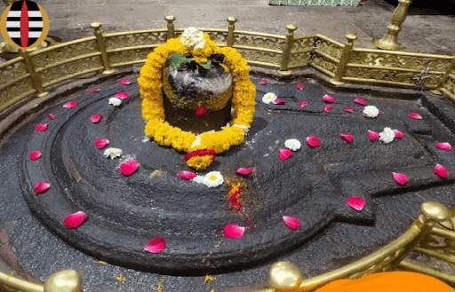

</hr>
<p>Grishneshwar Temple is a Hindu temple of Shiva in Verul village of Chhatrapati Sambhaji Nagar district, 
    Maharashtra, India. It is one of the 12 Jyotirlinga mandirs. The mandir is a national protected site, 
    one and a half kilometers away from the Ellora Caves, 30 kilometres (19 miles) north-west of the city Aurangabad, 
    and 300 kilometres (190 miles) east-northeast far from Mumbai.[5] Grushneshwar is mentioned in Shiva Purana, 
    Skanda Purana, the Ramayana and the Mahabharata.</p>


